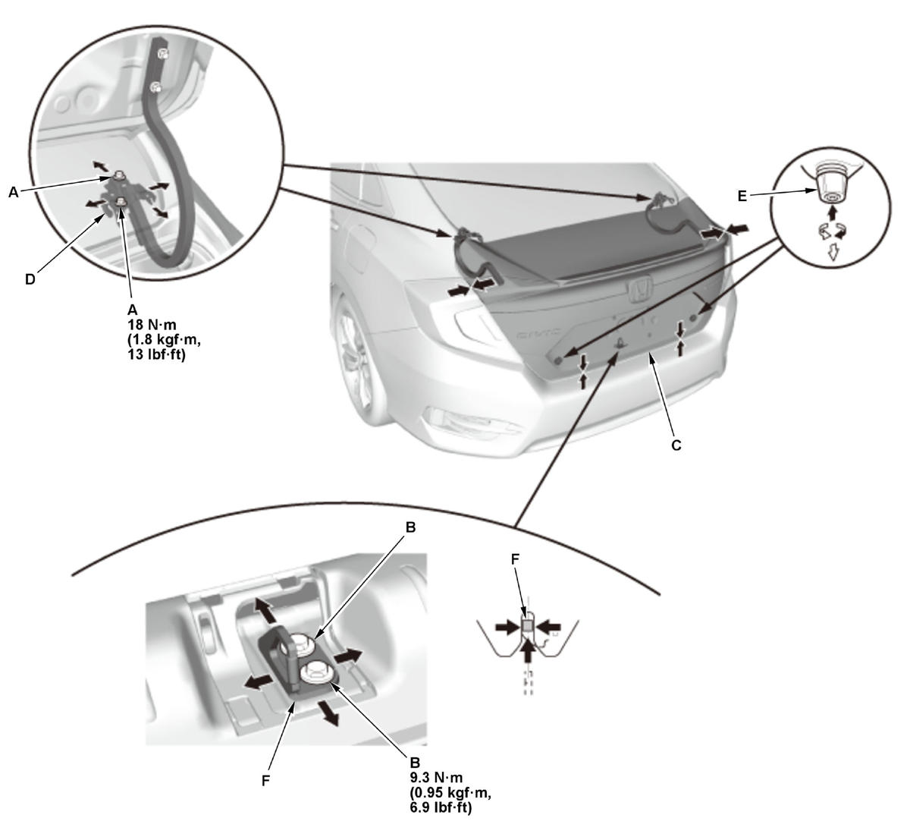

Trunk Lid Adjustment: Adjustment
- Rear Shelf - Remove
- Rear Panel Cap - Remove
- Trunk Lid - Adjust
1. Slightly loosen the trunk lid hinge bolts (A) and the striker bolts (B).

Courtesy of HONDA, U.S.A., INC.2. Adjust the trunk lid (C) alignment in the following sequence:
- Adjust the trunk lid hinges (D) right and left, as well as forward and rearward, by using the elongated holes. Take care not to hit the rear window when loosening the bolts.
- Turn the trunk lid edge cushions (E), in or out as necessary, to make the trunk lid fit flush with the body at the rear and side edges.
- Adjust the fit between the trunk lid and the trunk lid opening by moving the striker (F).
3. Tighten each bolt to the specified torque.
4. Make sure the trunk lid opens properly and locks securely.
- Rear Shelf - Install